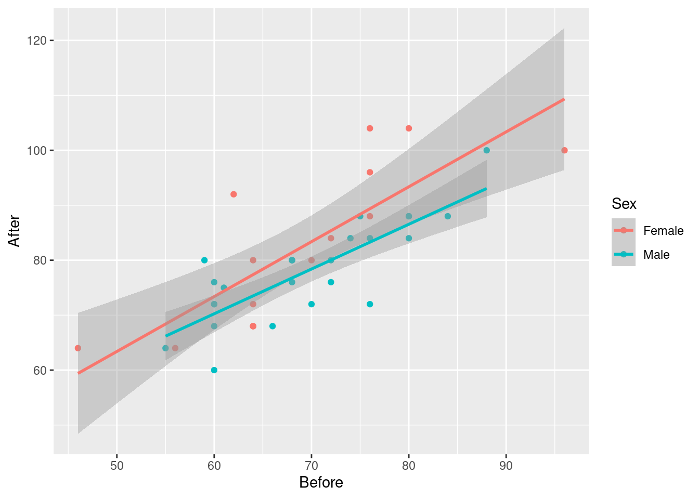

This question is about the Blue Jays data set (that I used in class).
Solution
Save the URL into a variable and then read from the URL, using
read_csv because it’s a .csv file:
##
## ── Column specification ───────────────────────────────────────────────────────────
## cols(
## .default = col_character(),
## row = col_double(),
## game = col_double(),
## venue = col_logical(),
## runs = col_double(),
## Oppruns = col_double(),
## innings = col_double(),
## position = col_double(),
## `game time` = col_time(format = ""),
## attendance = col_double()
## )
## ℹ Use `spec()` for the full column specifications.If you must, copy and paste the spreadsheet into R Studio, and read it
in with read_delim (or possibly read_tsv), but
this runs the risk of being defeated by spreadsheet cells that contain
spaces. I don’t think there are any here, but you might run into a
pitcher whose name has more than one word, like (Andy) Van Hekken, who
is in the Seattle Mariners farm system.
I found this by googling, after I had scrolled past all the pages of articles about the baseball pitcher who lives in a van.
Anyway, 25 rows and 21 columns. As usual, it’s a tibble, so you see 10
rows and as many columns as will fit. This is often enough to see
whether we have the right thing (as we appear to have, here). You can
run through all the columns and check that they’re the right kind of
thing; most of them are text with a few numbers and one time,
which is game time, the length of the game in hours and
minutes, which is turned into an R time in hours, minutes and
seconds.
With all those columns, read_csv doesn’t tell you what
column specification it inferred for all of them, but you can type
## cols(
## row = col_double(),
## game = col_double(),
## date = col_character(),
## box = col_character(),
## team = col_character(),
## venue = col_logical(),
## opp = col_character(),
## result = col_character(),
## runs = col_double(),
## Oppruns = col_double(),
## innings = col_double(),
## wl = col_character(),
## position = col_double(),
## gb = col_character(),
## winner = col_character(),
## loser = col_character(),
## save = col_character(),
## `game time` = col_time(format = ""),
## Daynight = col_character(),
## attendance = col_double(),
## streak = col_character()
## )to find it all out.
opp is equal to NYY). Investigate all
the columns. What do you notice about these games?Solution
This:
but you will probably need to click the little right-arrow at the top to see more columns.
What I notice is that these games are all on consecutive nights (against the same team). This is quite common, and goes back to the far-off days when teams travelled by train: teams play several games on one visit, rather than coming back many times. Hockey is similar: teams go on road trips, playing several different teams before returning home. Hockey teams, though, tend to play each team only once on a road trip: for example, a west coast team like the Canucks might play a game in each of Toronto, Montreal, Boston and New York on a road trip. Well, maybe three games in the New York area: one each against the Rangers, Islanders and Devils. You might have noticed something else; that’s fine for this. For example, “each of the games lasted less than three hours”, or “the attendances were all small” (since we looked at all the attendances in class). I just want you to notice something meaningful that seems to be interesting about these games.
You could also print all the columns in two or more goes, using
select, for example:
attendance and Daynight. How many of them are there
(just count them)? How many are day games and how many night games
(just count those too)?Solution
Two steps, since we selecting rows and columns.
Or this way, since we are selecting consecutive columns:
There are eight games selected (see the eight rows in the result). Only two of them are night games, while the other six are day (weekend) games.
If you wanted to, you could automate the counting, like this:
Six day games and two night games.
Solution
Two steps: the grouping according to what I want to group by, then summarizing according to what I want to summarize by. Since I am summarizing, only the summaries find their way into the final data frame, so I don’t need to “select out” the other variables:
The mean attendances are about 38 thousand and about 20 thousand. Note that the night games have much the larger SD, possibly because of the large outlier night attendance (opening night). Which we can also investigate.
jays %>%
group_by(Daynight) %>%
summarize(
median.att = median(attendance),
iqr.att = IQR(attendance)
)This time, the night attendances have a smaller spread and a noticeably smaller median (compared to the mean), so it must have been the outlier that made the difference. There was another high value that R marked as an outlier:

So when you take away those unusual values, the night game attendances are indeed less variable.
The right test, as you might have guessed, for comparing the medians of these non-normal data, is Mood’s median test:
## $table
## above
## group above below
## D 7 0
## N 5 12
##
## $test
## what value
## 1 statistic 9.882352941
## 2 df 1.000000000
## 3 P-value 0.001668714There was one attendance exactly equal to the overall median (as you
would expect: with an odd number of data values, the median is one of
the data values). smmr removed it; if you did the test by
hand, what happens to it depends on whether you counted aboves or
belows, and this will have a small effect on the P-value, though not
on the conclusion.
The overall median attendance was 21,000, and none of the day games had attendance less than that. With the small frequencies, the accuracy of the P-value is a bit questionable, but taking it at face value, there is a significant difference between median attendances at day and night games. If you do this by hand, you’ll get a warning about the chi-squared approximation being inaccurate. This is because of the small frequencies, and not because of the outliers. Those are not damaging the test at all.
Solution
The best way to do this is facetted normal quantile plots. Remember that the facetting part goes right at the end:
ggplot(jays, aes(sample = attendance)) +
stat_qq() + stat_qq_line() +
facet_wrap(~Daynight, ncol = 1)The day attendances are pretty normal, though it is hard to be sure with only 7 of them.
The night attendances are not normal. The lone point top right is the outlier. On top of that, the lowest attendances are not quite low enough and the second-highest attendance is a bit too high, so there is a bit of evidence of right-skewness as well as just the one outlier.
If you leave out the ncol=1, you’ll get the two normal
quantile plots side by side (which means that each one is tall and
skinny, and thus hard to read). The ncol=1 displays all the
facets in one column, and though it would be nice to have the
graphs be about square, landscape mode is easier to read than portrait
mode.
One of the reasons for skewness is often a limit on the values of the variable. The Rogers Centre has a capacity around 55,000. The day game attendances don’t get especially close to that, which suggests that everyone who wants to go to the game can get a ticket. In that sort of situation, you’d expect attendances to vary around a “typical” value, with a random deviation that depends on things like the weather and the opposing team, which is the typical situation in which you get bell-shaped data. (If the Jays often sold out their stadium for day games, you’d see a lot of attendances close to the capacity, with a few lower: ie., a left skew.)
As for the night games, well, there seems to be a minimum attendance that the Blue Jays get, somewhere around 15,000: no matter who they’re playing or what the weather’s like, this many people will show up (season-ticket holders, for example). On special occasions, such as opening night, the attendance will be much bigger, which points to a right skew.
My cars data file can be found at
link.
The values in
the data file are separated by commas; the car names are up to 29
characters long. Display your results for each part after (a). In R,
displaying a tibble normally shows its first ten lines, which
is all you need here; there’s no need to display all the lines.
Solution
read_csv will do it:
##
## ── Column specification ───────────────────────────────────────────────────────────
## cols(
## car = col_character(),
## MPG = col_double(),
## weight = col_double(),
## cylinders = col_double(),
## hp = col_double(),
## country = col_character()
## )Solution
This almost works, but not quite:
It gets all the columns that start with c, which
includes cylinders as well.
Solution
Naming what you don’t want is sometimes easier:
Solution
This:
8 of them, all from the US.
Solution
This one is selecting some observations and some variables:
Cylinders and horsepower are consecutive columns, so we can select
them either using the colon : or by
c(cylinders,hp).
You can also do the filter and the
select the other way around.
This one works because the rows you want to
choose are determined by a column you’re going to keep. If you wanted
to display the cylinders and horsepower of the cars with mpg
over 30, you would have to choose the rows first, because after you’ve
chosen the columns, there is no mpg any more.
Solution
Or you can get the mean and SD of gas mileage for all numbers of cylinders, and pick out the one you want:
Top row is the same as before. And since the output is a data frame, you can do any of these things with that, for example:
to pick out just the right row. This is a very easy kind of question to set on an exam. Just so you know.